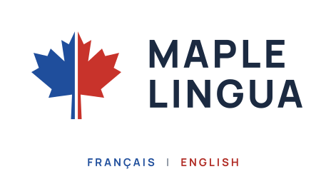
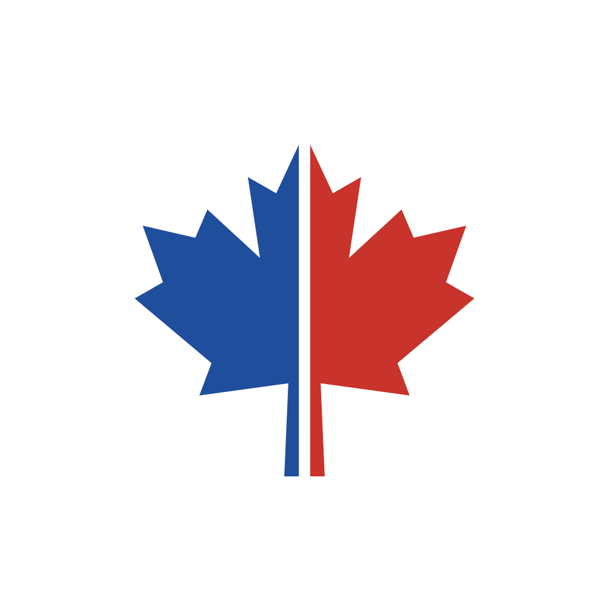
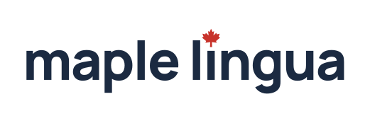
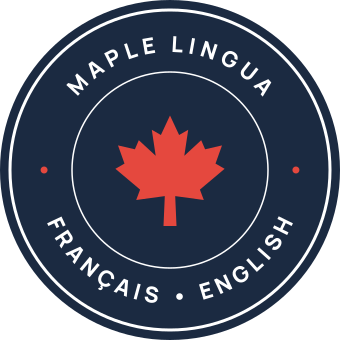
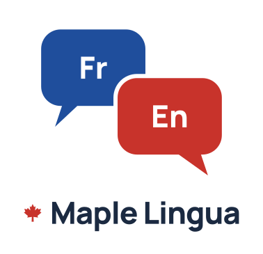
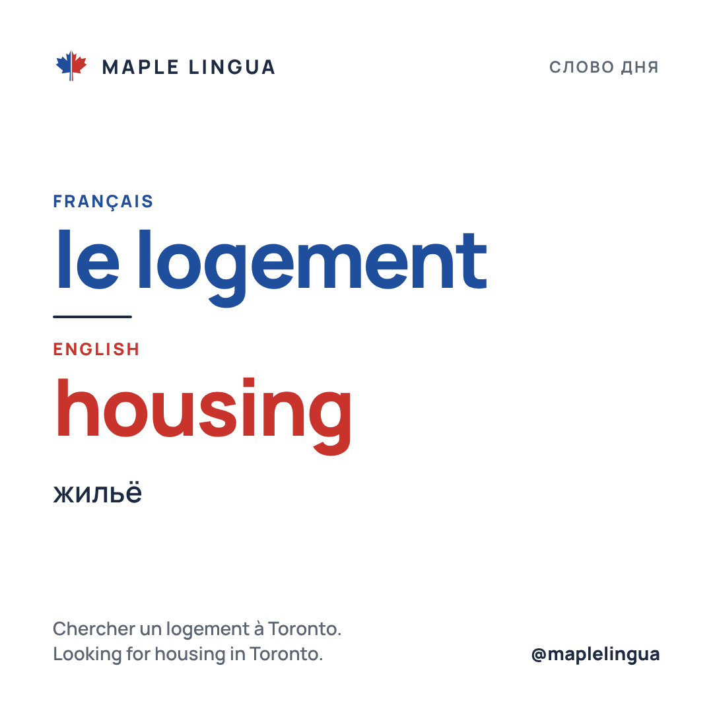
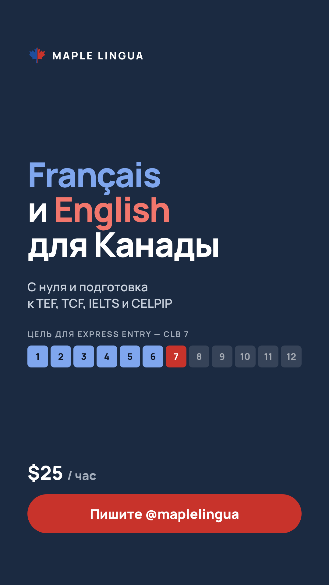
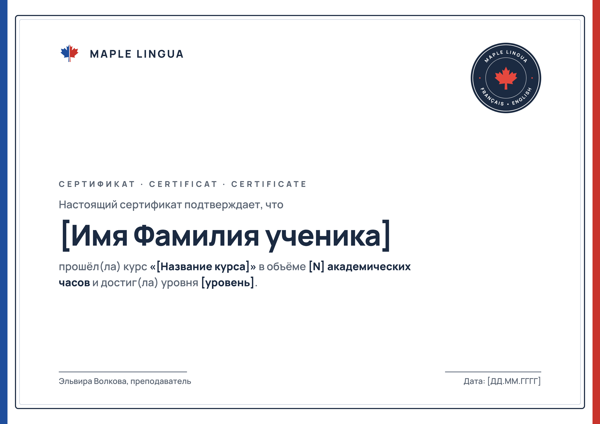

<title>Maple Lingua Брендбук</title>
<meta name="claude:viewport-fit-sides" content="cover">
<link rel="stylesheet" href="https://fonts.googleapis.com/css2?family=Manrope:wght@400;500;600;700;800&display=swap">
<style>
/* Layout: one 1040px column of numbered chapters; each chapter = heading row + content grid; logo specimens sit on fixed white tiles so they read in both themes. */
:root {
  --bg: #FFFFFF; --surface: #F2F4F7; --line: #DCE1E8; --ink: #1B2A41; --muted: #56606E;
  --fr: #1F4E9C; --en: #C8332B; --tile: #FFFFFF; --tile-ink: #1B2A41; --no: #C8332B;
  --font: "Manrope", "Segoe UI", system-ui, sans-serif;
}
@media (prefers-color-scheme: dark) { :root:not([data-theme="light"]) {
  --bg: #0F1726; --surface: #172236; --line: #2A3750; --ink: #E9EDF3; --muted: #A4AEBC;
  --fr: #7FA6EE; --en: #F2766C; --no: #F2766C; color-scheme: dark; } }
:root[data-theme="dark"] {
  --bg: #0F1726; --surface: #172236; --line: #2A3750; --ink: #E9EDF3; --muted: #A4AEBC;
  --fr: #7FA6EE; --en: #F2766C; --no: #F2766C; color-scheme: dark; }
* { box-sizing: border-box; }
body { background: var(--bg); color: var(--ink); font-family: var(--font); font-size: 16px; line-height: 1.6; }
.wrap { max-width: 1040px; margin: 0 auto; padding-left: max(16px, env(safe-area-inset-left, 0px)); padding-right: max(16px, env(safe-area-inset-right, 0px)); }
h1, h2, h3 { margin: 0; line-height: 1.15; text-wrap: balance; letter-spacing: -0.01em; }
p { margin: 0; }
.cover { padding-block: 72px 56px; border-bottom: 1px solid var(--line); }
.cover .wrap { display: grid; gap: 28px; }
.cover-logo { background: var(--tile); border-radius: 16px; padding: 40px; display: grid; place-items: center; border: 1px solid var(--line); }
.cover-logo img { width: min(460px, 100%); height: auto; }
.cover h1 { font-size: clamp(2rem, 5vw, 3rem); font-weight: 800; }
.cover p { color: var(--muted); font-size: 1.1875rem; max-width: 60ch; }
.toc { display: flex; flex-wrap: wrap; gap: 8px 20px; }
.toc a { color: var(--ink); font-weight: 700; text-decoration: none; font-size: 0.9375rem; }
.toc a:hover { color: var(--fr); }
a:focus-visible { outline: 3px solid var(--fr); outline-offset: 3px; border-radius: 4px; }
section.ch { padding-block: 64px; border-bottom: 1px solid var(--line); scroll-margin-top: 16px; }
.ch-head { display: grid; grid-template-columns: 56px minmax(0, 1fr); gap: 8px 16px; margin-bottom: 32px; align-items: baseline; }
.ch-num { font-weight: 800; color: var(--muted); font-variant-numeric: tabular-nums; }
.ch-head h2 { font-size: 2rem; font-weight: 800; }
.ch-head p { grid-column: 2; color: var(--muted); max-width: 62ch; }
.label { font-size: 0.8125rem; font-weight: 700; letter-spacing: 0.1em; text-transform: uppercase; color: var(--muted); }
.grid2 { display: grid; grid-template-columns: repeat(2, minmax(0, 1fr)); gap: 20px; }
.grid3 { display: grid; grid-template-columns: repeat(3, minmax(0, 1fr)); gap: 20px; }
.grid4 { display: grid; grid-template-columns: repeat(4, minmax(0, 1fr)); gap: 16px; }
@media (max-width: 820px) { .grid3, .grid4 { grid-template-columns: repeat(2, minmax(0, 1fr)); } }
@media (max-width: 560px) { .grid2, .grid3, .grid4 { grid-template-columns: minmax(0, 1fr); } }
.spec { display: grid; gap: 10px; align-content: start; min-width: 0; }
.tile { background: var(--tile); border: 1px solid var(--line); border-radius: 14px; aspect-ratio: 4 / 3; max-width: 100%; display: grid; place-items: center; padding: 28px; overflow: hidden; }
.tile img { max-width: 100%; max-height: 100%; height: auto; }
.tile.navy { background: #1B2A41; border-color: #1B2A41; }
.spec h3 { font-size: 1.0625rem; font-weight: 800; }
.spec p { color: var(--muted); font-size: 0.9375rem; }
.rule { background: var(--surface); border-radius: 14px; padding: 24px 28px; display: grid; gap: 6px; }
.rule b { font-size: 1.1875rem; }
.rule p { color: var(--muted); }
/* clear space diagram */
.clear { position: relative; background: var(--tile); border: 1px solid var(--line); border-radius: 14px; padding: 48px; display: grid; place-items: center; }
.clear-box { position: relative; outline: 2px dashed #8AA4D6; outline-offset: 28px; }
.clear-box img { display: block; width: min(320px, 60vw); height: auto; }
.clear-note { position: absolute; top: 12px; left: 16px; font-size: 0.8125rem; font-weight: 700; color: #3F5F9E; }
/* colors */
.sw { border: 1px solid var(--line); border-radius: 14px; overflow: hidden; display: grid; min-width: 0; }
.sw-chip { height: 120px; }
.sw-body { padding: 14px 16px; display: grid; gap: 2px; }
.sw-body b { font-size: 1rem; }
.sw-body span { color: var(--muted); font-size: 0.875rem; font-variant-numeric: tabular-nums; }
.sw-body code { font-family: ui-monospace, "SF Mono", Menlo, monospace; font-size: 0.875rem; user-select: all; }
.ratio { display: flex; height: 40px; border-radius: 10px; overflow: hidden; border: 1px solid var(--line); margin-top: 20px; }
.ratio div { display: grid; place-items: center; font-size: 0.8125rem; font-weight: 700; }
/* type */
.type-row { display: grid; grid-template-columns: 180px minmax(0, 1fr); gap: 20px; padding-block: 18px; border-bottom: 1px solid var(--line); align-items: baseline; }
.type-row:last-child { border-bottom: 0; }
.type-row .meta { color: var(--muted); font-size: 0.875rem; font-variant-numeric: tabular-nums; }
@media (max-width: 560px) { .type-row { grid-template-columns: minmax(0, 1fr); gap: 4px; } }
.specimen { font-size: clamp(3rem, 9vw, 6rem); font-weight: 800; line-height: 1; letter-spacing: -0.03em; overflow-wrap: anywhere; }
/* don'ts */
.dont .tile { position: relative; }
.dont .tile::after { content: "✕"; position: absolute; top: 10px; right: 14px; color: var(--no); font-weight: 800; font-size: 1.25rem; }
.dont p { color: var(--ink); font-weight: 600; font-size: 0.9375rem; }
.busy { background: repeating-linear-gradient(45deg, #F2766C 0 18px, #7FA6EE 18px 36px, #FFD166 36px 54px) !important; }
/* voice */
.voice { display: grid; grid-template-columns: repeat(2, minmax(0, 1fr)); gap: 16px; }
@media (max-width: 640px) { .voice { grid-template-columns: minmax(0, 1fr); } }
.say { border: 1px solid var(--line); border-radius: 14px; padding: 20px 22px; display: grid; gap: 8px; }
.say .label.yes, .words .label.yes { color: var(--fr); } .say .label.no, .words .label.no { color: var(--no); }
.principles { margin: 0; padding-left: 24px; display: grid; gap: 12px; max-width: 72ch; }
.principles li { padding-left: 4px; }
.principles li b { color: var(--ink); }
.principles li { color: var(--muted); }
.words { border: 1px solid var(--line); border-radius: 14px; padding: 20px 22px; display: grid; gap: 8px; }
.words p { font-weight: 600; line-height: 1.8; }
/* applications */
.app { display: grid; gap: 10px; align-content: start; min-width: 0; }
.app img { width: 100%; height: auto; border-radius: 12px; border: 1px solid var(--line); display: block; }
.app h3 { font-size: 1.0625rem; font-weight: 800; }
.app p { color: var(--muted); font-size: 0.9375rem; }
.files { margin: 0; padding-left: 20px; display: grid; gap: 4px; color: var(--muted); }
.files code { color: var(--ink); font-family: ui-monospace, "SF Mono", Menlo, monospace; font-size: 0.875rem; overflow-wrap: anywhere; }
footer { padding-block: 32px; color: var(--muted); font-size: 0.875rem; }
</style>

<header class="cover">
  <div class="wrap">
    <div class="label">Брендбук · версия 1.0 · ноябрь 2026</div>
    <h1>Maple Lingua</h1>
    <p>Школа французского и английского для жизни в Канаде. Здесь собраны правила: как выглядит логотип, какие у бренда цвета и шрифт и как мы пишем.</p>
    <div class="cover-logo"></div>
    <nav class="toc" aria-label="Содержание">
      <a href="#idea">Идея</a><a href="#logo">Логотип</a><a href="#space">Поле и размер</a><a href="#dont">Нельзя</a><a href="#color">Цвета</a><a href="#type">Шрифт</a><a href="#voice">Голос</a><a href="#apps">Носители</a>
    </nav>
  </div>
</header>

<main>
  <section class="ch" id="idea"><div class="wrap">
    <div class="ch-head"><span class="ch-num">01</span><h2>Идея</h2><p>Кленовый лист разделён на две половины: синюю (французский) и красную (английский). В Канаде два официальных языка, и мы учим обоим.</p></div>
    <div class="grid2">
      <div class="rule"><b>Синий — всегда французский</b><p>Подписи, плашки, слова, ссылки на TEF и TCF выделяем синим.</p></div>
      <div class="rule"><b>Красный — всегда английский</b><p>Всё, что связано с английским, IELTS и CELPIP, выделяем красным. Главная кнопка тоже красная.</p></div>
    </div>
  </div></section>

  <section class="ch" id="logo"><div class="wrap">
    <div class="ch-head"><span class="ch-num">02</span><h2>Логотип</h2><p>Основной логотип горизонтальный. Если места мало или нужен круг, используем знак без надписи. Дополнительные варианты — для особых случаев.</p></div>
    <div class="grid2" style="margin-bottom:20px">
      <div class="spec"><div class="tile"></div><h3>Основной</h3><p>Сайт, документы, обложки, презентации.</p></div>
      <div class="spec"><div class="tile"></div><h3>Знак</h3><p>Аватарка в Telegram, иконка сайта, водяной знак.</p></div>
    </div>
    <div class="grid3">
      <div class="spec"><div class="tile"></div><h3>Надпись</h3><p>Шапки, баннеры, где лист уже есть рядом.</p></div>
      <div class="spec"><div class="tile"></div><h3>Печать</h3><p>Сертификаты, наклейки, мерч.</p></div>
      <div class="spec"><div class="tile"></div><h3>Fr + En</h3><p>Посты про сравнение языков, разговорный клуб.</p></div>
    </div>
  </div></section>

  <section class="ch" id="space"><div class="wrap">
    <div class="ch-head"><span class="ch-num">03</span><h2>Охранное поле и размер</h2><p>Вокруг логотипа оставляем свободное поле не меньше высоты буквы M. В эту зону не заходят текст, края фото и другие логотипы.</p></div>
    <div class="clear"><span class="clear-note">поле = высота M</span><div class="clear-box"></div></div>
    <div class="grid3" style="margin-top:20px">
      <div class="rule"><b>от 120 px</b><p>Минимальная ширина основного логотипа на экране.</p></div>
      <div class="rule"><b>от 24 px</b><p>Минимальный размер знака. Мельче лист теряет форму.</p></div>
      <div class="rule"><b>от 30 мм</b><p>Минимальная ширина основного логотипа в печати.</p></div>
    </div>
  </div></section>

  <section class="ch dont" id="dont"><div class="wrap">
    <div class="ch-head"><span class="ch-num">04</span><h2>Так нельзя</h2><p>Логотип используем только из готовых файлов, ничего в нём не меняем.</p></div>
    <div class="grid4">
      <div class="spec"><div class="tile"><svg viewBox="0 0 100 100" width="120" height="120" aria-label="Лист с цветами, поменянными местами" role="img"><defs><clipPath id="dl"><rect width="48.6" height="100"/></clipPath><clipPath id="dr"><rect x="51.4" width="48.6" height="100"/></clipPath></defs><polygon clip-path="url(#dl)" fill="#C8332B" points="50,5 57,20 64,16 61,36 74,24 77,31 90,28 85,42 92,46 73,62 76,70 54,67 55,90 45,90 46,67 24,70 27,62 8,46 15,42 10,28 23,31 26,24 39,36 36,16 43,20"/><polygon clip-path="url(#dr)" fill="#1F4E9C" points="50,5 57,20 64,16 61,36 74,24 77,31 90,28 85,42 92,46 73,62 76,70 54,67 55,90 45,90 46,67 24,70 27,62 8,46 15,42 10,28 23,31 26,24 39,36 36,16 43,20"/></svg></div><p>Менять цвета местами</p></div>
      <div class="spec"><div class="tile"></div><p>Растягивать и сжимать</p></div>
      <div class="spec"><div class="tile"></div><p>Поворачивать</p></div>
      <div class="spec"><div class="tile busy"></div><p>Ставить на пёстрый фон</p></div>
    </div>
  </div></section>

  <section class="ch" id="color"><div class="wrap">
    <div class="ch-head"><span class="ch-num">05</span><h2>Цвета</h2><p>Основа — белый и тёмно-синий. Синий и красный — акценты, их немного. Для тёмного фона есть светлые версии акцентов.</p></div>
    <div class="grid3">
      <div class="sw"><div class="sw-chip" style="background:#1F4E9C"></div><div class="sw-body"><b>Синий Français</b><code>#1F4E9C</code><span>RGB 31 78 156</span></div></div>
      <div class="sw"><div class="sw-chip" style="background:#C8332B"></div><div class="sw-body"><b>Красный English</b><code>#C8332B</code><span>RGB 200 51 43</span></div></div>
      <div class="sw"><div class="sw-chip" style="background:#1B2A41"></div><div class="sw-body"><b>Тёмно-синий</b><code>#1B2A41</code><span>RGB 27 42 65 · текст, тёмный фон</span></div></div>
      <div class="sw"><div class="sw-chip" style="background:#5A6472"></div><div class="sw-body"><b>Серый</b><code>#5A6472</code><span>RGB 90 100 114 · подписи</span></div></div>
      <div class="sw"><div class="sw-chip" style="background:#F2F4F7"></div><div class="sw-body"><b>Светлый фон</b><code>#F2F4F7</code><span>RGB 242 244 247</span></div></div>
      <div class="sw"><div class="sw-chip" style="background:#FFFFFF"></div><div class="sw-body"><b>Белый</b><code>#FFFFFF</code><span>RGB 255 255 255</span></div></div>
      <div class="sw"><div class="sw-chip" style="background:#7FA6EE"></div><div class="sw-body"><b>Синий на тёмном</b><code>#7FA6EE</code><span>RGB 127 166 238</span></div></div>
      <div class="sw"><div class="sw-chip" style="background:#F2766C"></div><div class="sw-body"><b>Красный на тёмном</b><code>#F2766C</code><span>RGB 242 118 108</span></div></div>
      <div class="sw"><div class="sw-chip" style="background:#0F1726"></div><div class="sw-body"><b>Ночной фон</b><code>#0F1726</code><span>RGB 15 23 38</span></div></div>
    </div>
    <div class="label" style="margin-top:28px">Пропорции на макете</div>
    <div class="ratio" aria-label="Белый 60%, тёмно-синий 25%, синий 8%, красный 7%">
      <div style="flex:60;background:#FFFFFF;color:#1B2A41">белый 60%</div>
      <div style="flex:25;background:#1B2A41;color:#FFFFFF">25%</div>
      <div style="flex:8;background:#1F4E9C;color:#FFFFFF">8%</div>
      <div style="flex:7;background:#C8332B;color:#FFFFFF">7%</div>
    </div>
  </div></section>

  <section class="ch" id="type"><div class="wrap">
    <div class="ch-head"><span class="ch-num">06</span><h2>Шрифт</h2><p>Один шрифт на всё — Manrope. Бесплатный, есть в Google Fonts, поддерживает кириллицу и французские буквы. Заголовки пишем ExtraBold, текст — Regular и Medium.</p></div>
    <div class="specimen">Aa Çç Жж</div>
    <div style="margin-top:28px">
      <div class="type-row"><span class="meta">Заголовок 1 · 56/800</span><span style="font-size:clamp(2rem,5vw,3.5rem);font-weight:800;line-height:1.1;letter-spacing:-.025em">Français и English</span></div>
      <div class="type-row"><span class="meta">Заголовок 2 · 32/800</span><span style="font-size:2rem;font-weight:800;line-height:1.15">Подготовка к TEF Canada</span></div>
      <div class="type-row"><span class="meta">Заголовок 3 · 24/800</span><span style="font-size:1.5rem;font-weight:800">Английский с нуля</span></div>
      <div class="type-row"><span class="meta">Текст · 16/400, интерлиньяж 1.6</span><span>Разбираем формат экзамена по всем четырём частям и тренируемся на заданиях.</span></div>
      <div class="type-row"><span class="meta">Подпись · 13/700, разрядка 12%</span><span class="label">Français · иммиграция</span></div>
    </div>
  </div></section>

  <section class="ch" id="voice"><div class="wrap">
    <div class="ch-head"><span class="ch-num">07</span><h2>Голос бренда: проводник</h2><p>Мы говорим как человек, который уже прошёл этот путь: сдал экзамены, переехал, получил паспорт Канады. Теперь он спокойно и честно ведёт по этому пути других. Это не учитель с указкой и не мотивационный блогер, а старшая подруга, которая уже там.</p></div>

    <div class="rule" style="margin-bottom:28px"><b>Почему так</b><p>Наши ученики — взрослые люди, которые принимают одно из главных решений в жизни. Им тревожно: один балл на экзамене может решить, пройдут ли они по Express Entry. Им нужны не восторг и обещания, а спокойствие, ясность и человек, который знает дорогу. Личный путь Эльвиры до паспорта — наш главный аргумент.</p></div>

    <div class="label" style="margin-bottom:12px">Пять принципов</div>
    <ol class="principles">
      <li><b>Конкретика вместо обещаний.</b> Называем экзамены, баллы и шкалы: «разберём, какие задания в TEF дают NCLC 7», а не «быстро выучите язык». Точность и есть экспертность.</li>
      <li><b>Спокойная уверенность.</b> Снимаем тревогу, а не нагнетаем её: «это решаемо, вот с чего начать». Никаких «успей, пока не поздно».</li>
      <li><b>Личный опыт как доказательство, но в меру.</b> «Когда я сдавала TEF…». Про собственную иммиграцию говорим один раз на странице или в посте, в блоке о преподавателе. Не повторяем «я прошла путь — помогу пройти вам» в каждом абзаце: это быстро начинает отталкивать.</li>
      <li><b>Честность.</b> Не гарантируем результат и не обещаем чудес. «С нуля до B2 за три месяца не получится, давайте посчитаем реальный срок». Такая честность вызывает больше доверия, чем любые обещания.</li>
      <li><b>Профессионально и по-человечески.</b> Образование, экзамены и опыт описываем строго, фактами. Теплота — в объяснениях для ученика: «в первый раз все путаются, это нормально». Шутки уместны в Telegram-канале, на сайте и в документах их нет.</li>
    </ol>

    <div class="grid2" style="margin-block:28px">
      <div class="rule"><b>Сайт, документы, сертификаты</b><p>На «вы», от первого лица Эльвиры: «я напишу», «разберём». Коротко и спокойно.</p></div>
      <div class="rule"><b>Telegram-канал</b><p>Тоже на «вы», но теплее и разговорнее: истории, вопросы к читателям, разборы. Эмодзи можно, но не больше одного-двух на пост.</p></div>
    </div>

    <div class="label" style="margin-bottom:12px">Так и не так</div>
    <div class="voice">
      <div class="say"><span class="label yes">Так</span><p>Сдавала TEF сама. Самое сложное там — не грамматика, а время. Покажу, как его распределять.</p></div>
      <div class="say"><span class="label no">Не так</span><p>Наши уникальные методики гарантируют высокий результат!</p></div>
      <div class="say"><span class="label yes">Так</span><p>CLB 7 — это не «говорю свободно», а уверенный средний уровень. Он достижим.</p></div>
      <div class="say"><span class="label no">Не так</span><p>Выучите язык за месяц!</p></div>
      <div class="say"><span class="label yes">Так</span><p>Не знаете, TEF или TCF? В первый раз все путаются, это нормально. Разберём на первом уроке.</p></div>
      <div class="say"><span class="label no">Не так</span><p>Осуществляем подготовку к международным экзаменам.</p></div>
    </div>

    <div class="grid2" style="margin-top:28px">
      <div class="words"><span class="label yes">Наши слова</span><p>разберём · покажу · по шагам · на моём опыте · реально · спокойно · честно скажу · это нормально</p></div>
      <div class="words"><span class="label no">Избегаем</span><p>уникальная методика · гарантия · лучшие преподаватели · успей · осуществляем · предоставляем · «!!!» · ряды эмодзи</p></div>
    </div>
  </div></section>

  <section class="ch" id="apps"><div class="wrap">
    <div class="ch-head"><span class="ch-num">08</span><h2>Носители</h2><p>Готовые шаблоны. Исходники в HTML лежат рядом с картинками: текст меняется в любом редакторе.</p></div>
    <div class="grid3">
      <div class="app"><h3>Пост «Слово дня»</h3><p>1080×1080. Слово по-французски синим, по-английски красным, перевод и пример.</p></div>
      <div class="app"><h3>Сторис «Запись»</h3><p>1080×1920. Оффер, шкала CLB, цена и кнопка.</p></div>
      <div class="app"><h3>Аватарка</h3><p>1024×1024. Telegram обрезает её в круг.</p></div>
    </div>
    <div class="app" style="margin-top:20px"><h3>Сертификат</h3><p>A4, альбомный. Есть PDF для печати. Поля в квадратных скобках заполняются вручную.</p></div>
    <div class="label" style="margin-top:32px">Где лежат файлы</div>
    <ul class="files">
      <li><code>logos/</code> — логотипы в SVG и PNG</li>
      <li><code>logos/avatar/</code> — аватарки</li>
      <li><code>brand/templates/</code> — шаблоны PNG и PDF, исходники в <code>source/</code></li>
    </ul>
  </div></section>
</main>
<footer><div class="wrap">Maple Lingua · @maplelingua</div></footer>
